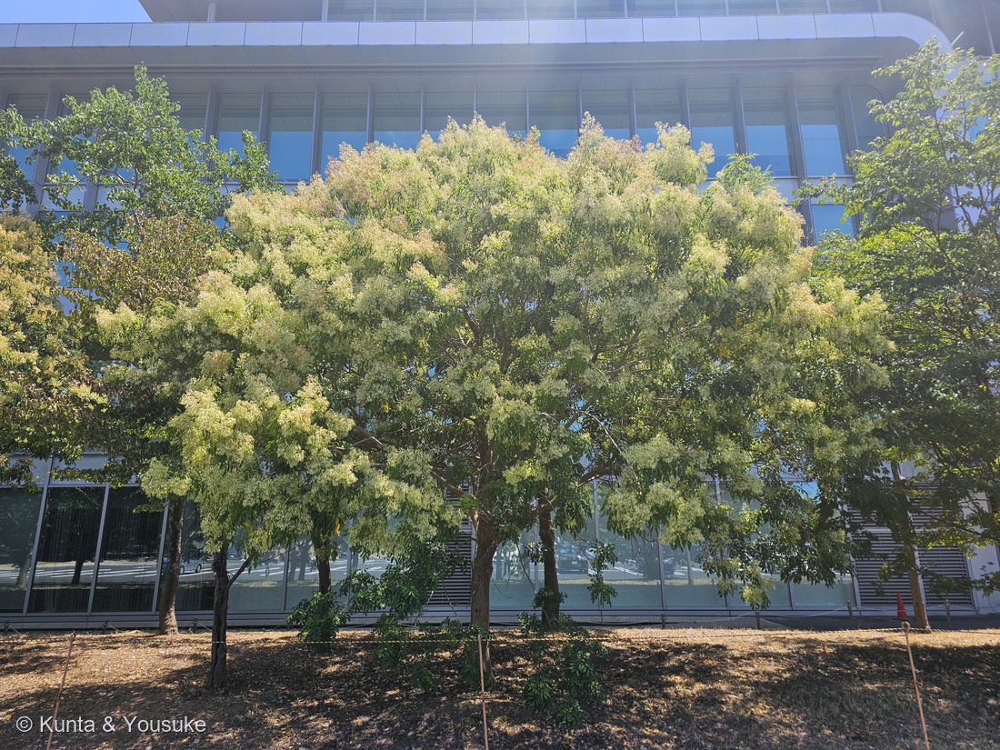
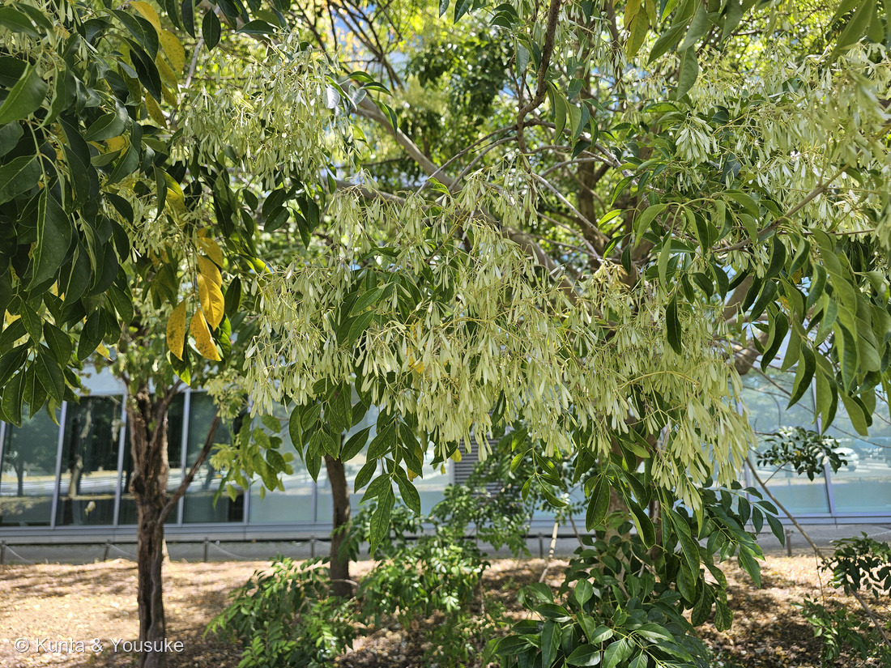
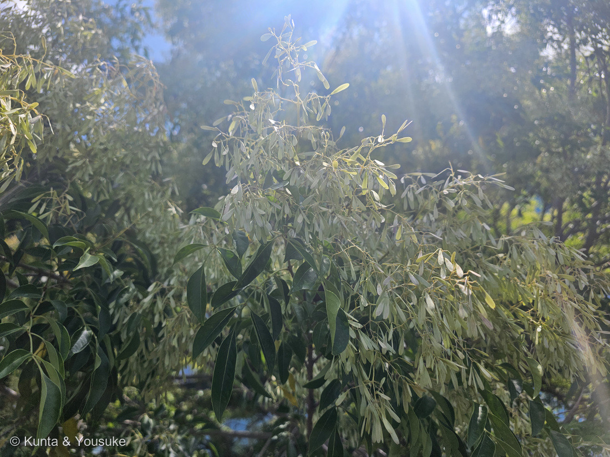
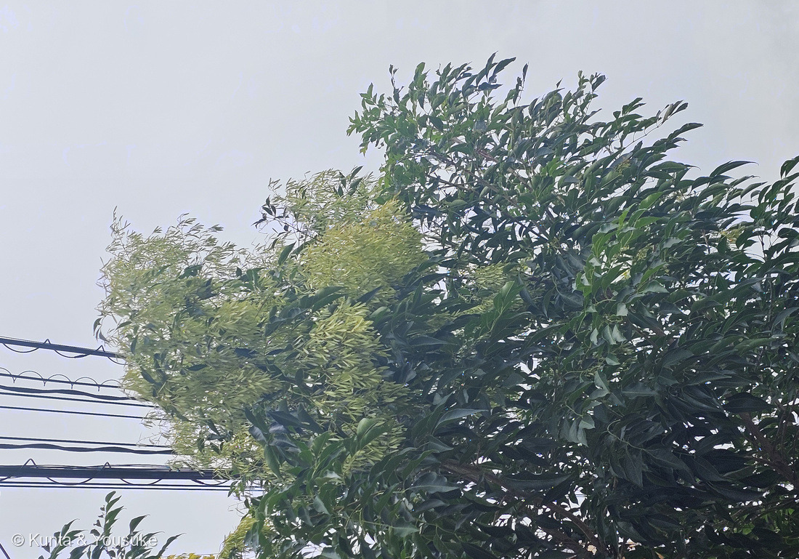
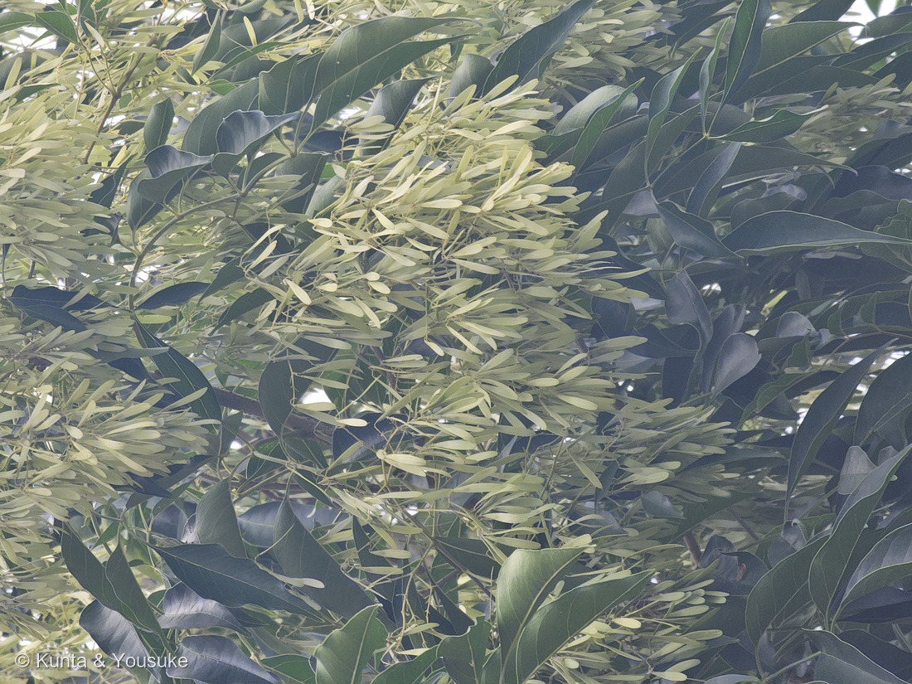
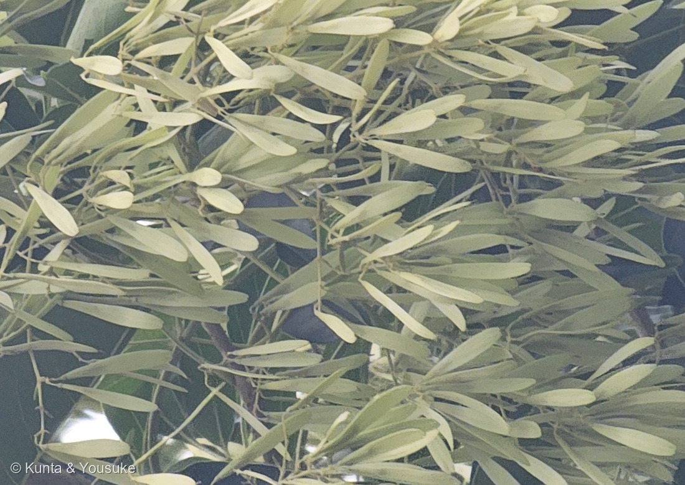

地図を読み込んでいるよ…
🔍 写真も地図も、押しているあいだ拡大して見られるよ（スマホは指を置いてすこし待ってね）。
🌍 の地図＝この子がもともと自生している場所を緑に。日本（沖縄）、台湾、中国南部（福建・広東・広西・海南・湖北・湖南）、インド、バングラデシュ、ミャンマー、ベトナム、フィリピン、インドネシア。亜熱帯〜熱帯の山地に自生する。くわしくは下の地図の説明を見てね。
⭐南の島から、東南アジアの山地まで広がる木だよ。日本では沖縄県にだけ自生する（庭木図鑑 植木ペディア「南西の島々に育つトネリコの仲間という意味で、シマトネリコと名付けられた」）。⭐中国は、Flora of China が挙げる福建・広東・広西・海南・湖北・湖南だけを塗ってある＝⚠中国ぜんぶではないよ（267 シラカシのときは省をぜんぶ塗ったので、そこがちがうんだ）。⭐三河の植物観察は分布を「沖縄、中国、台湾、インド、バングラディシュ、フィリピン、ミャンマー、ベトナム、インドネシア」とする＝⭐この緑は、亜熱帯から熱帯のモンスーンの地域にそって広がっている。⚠⚠そして、この地図でいちばん大事なのは「本州が緑じゃないこと」＝⭐ぼくらが会った長崎の並木も、自宅付近の道路ぞいの木も、ぜんぶ植えられたもの――関東以南でないと露地での越冬はむずかしい（日本語版Wikipedia）＝⭐長崎や広島は、この木にちょうどいい暖かさなんだね。⚠オーストラリアは緑にしていない＝あちらでは侵略的外来種として広がっているけれど、それは原産地ではないから。⭐同じモクセイ科の052 オリーブは地中海、151 ライラックはバルカン半島＝⭐⭐三人とも、ずいぶん遠いところから来ているね。
⚠ 地図は国（日本と中国だけ県・省）までしか塗れないから、ほんとうの分布より広く見えていることがあるよ。地図はだいたいの場所。正確なところは、上の文を見てね。
シマトネリコ（島梣）
Fraxinus griffithii C.B.Clarke
別名 タイワンシオジ／タイワントネリコ／タイトウシオジ 原産 日本（沖縄）・台湾・中国南部・インド〜東南アジアの亜熱帯〜熱帯の山地
モクセイ科 · Oleaceae（トネリコ属 Fraxinus・シソ目 Lamiales）── ⭐3人目のモクセイ科（052 オリーブ・151 ライラック）／⚠科は103のまま
燻太さんの言葉「長崎の駐車場で見かけたシマトネリコ。じつは、この植物の名前はこの後立ち寄った森きららで、シマトネリコの名札と木を見つけたからわかったんだ。そしてその数日前に、自宅付近の道路沿いでも見かけて写真を撮っていたんだ。」── ⭐⭐⭐3回会って、名前が分かったのは3回目。答えのほうが、あとからやってきた出会いかただった
名前と学名の由来 ── 「島のトネリコ」と、「戸に塗る木」
- シマ＝南西の島々。庭木図鑑 植木ペディアは「南西の島々に育つトネリコの仲間という意味で、シマトネリコと名付けられた」と書いている。日本では沖縄県にだけ自生するよ。
- ⭐⭐では「トネリコ」は？——日本語版Wikipediaによると、この木の樹皮につくイボタロウムシが出す蝋（イボタ蝋）を、動きの悪くなった敷居の溝に塗ってすべりを良くしたことから「戸に塗る木（ト-ニ-ヌル-キ）」とされたのが、転訛して「トネリコ」になったと考えられている。→ ⭐道具の使いかたが、そのまま木の名前になったんだ。
- ⭐索引でとなりに並ぶ 257 シマサルスベリも、同じ「シマ」（鹿児島県大隅諸島・奄美群島）＝南の島から来た木には、この「シマ」がつくんだね。
- 学名 Fraxinus＝セイヨウトネリコのラテン古名。⭐griffithii＝ウィリアム・グリフィス（William Griffith, 1810–1845）への献名。イギリスの医師で植物学者、ビルマの民間外科医としてはたらきながら現地の植物を調べ、アッサムのバラク川流域やイラワジ川、シッキム高地やヒマラヤのふもとを歩いた人。⭐C.B.クラークが『Flora of British India』（1882）でこの種を記載したとき、基準標本が「W. Griffith 3677」だった＝⭐採ってきた人の名前が、そのまま種の名前になった。
⭐⭐⭐⭐ この植物のこと ── 白い花に見えたのは、じつは「実」


⭐ この節の写真だよ。ボタンで切り替えてね。⑤は自宅付近の木の翼果と葉、⑥はそれをもっと大きくしたもの。⭐太いほう（種のある側）が柄につき、細長い翼が外へのびているのが見えるかな。
⭐⭐⭐ 写真①で樹冠をクリーム色におおっているものは、花ではなく翼果（よくか）だよ。——シマトネリコの花期は5〜6月（庭木図鑑 植木ペディア「開花は５～６月」／日本語版Wikipedia「花期は5～6月ごろ」／森きららの名札「開花：5月〜6月」）。⭐でも写真は8月9日と8月13日＝もう2〜3か月おそいんだ。
- 翼果のかたち＝倒披針形（へら形）で、長さ2.5〜3cm・幅4〜5mm の片翼（三河の植物観察「翼果は広披針状へら形、長さ2.5〜3㎝、幅4〜5㎜」）。⭐写真⑥を見ると、太いほう（種のある側）が柄につき、細長い翼が外へのびているのが分かるよ。
- ⭐「樹冠いっぱい」も出典どおり＝庭木図鑑 植木ペディア「雌株に咲く雌花の後には小さな豆のような果実が樹冠いっぱいに稔る」。→ 写真①②③⑤⑥、ぜんぶそれ。
- 葉は奇数羽状複葉（森きららの名札「葉は奇数羽状複葉で小葉は2〜6対」／三河の植物観察「小葉は5〜7(11)個つき」）。小葉は全縁・革質でつやがある（植木ペディア「長さ３～１０センチ、幅２～４センチの楕円形で革質」）。⭐写真②の左下と⑤で、軸の左右に小葉が向かいあってつき、先に1枚だけ余るのが見える＝これが「奇数」羽状複葉。
- ⚠トネリコ属では数少ない常緑樹（日本語版Wikipedia）。三河の植物観察は「高さ(5)10～20mの常緑高木、寒くなる場所では半常緑低木」とする。
- ⚠成長がとても早い（植木ペディア「思いのほか成長が早く、枝葉が繁茂しやすい」）＝⭐だから「オフィス街や商業施設に多用される人気の木」（同）。写真①の駐車場の並木も、④の道路ぞいの木も、まさにそれだね。
⭐⭐⭐⭐ 同定 ── 3か所で出会って、答えがいちばん最後に来た
⭐⭐⭐ この子との出会いは、時系列が逆になっているんだ。
- ① 2026-08-09 12:15・自宅付近の道路ぞい（名前を知らないまま撮った）＝写真④⑤⑥
- ② 2026-08-13 11:43・長崎の駐車場（名前を知らないまま撮った）＝写真①②③。⭐この日の2時間半あとが、252 イングリッシュオーク（グラバー園 14:17）だよ。
- ③ 2026-08-14 14:27:14・森きららの名札（⭐ここで名前が分かった）。⭐その8秒あとの 14:27:22 から、260 シュロガヤツリが始まる。
→ ⭐⭐ つまり、名札はいちばん最後に来て、それより前の2つの出会いに、あとから名前をつけたことになる。⭐「答えのほうが、あとからやってくる」出会いかただった。
⚠ 名札がついていたのは園の木で、長崎と自宅付近の木ではない＝⭐だから同定は、名札に書いてあることと写真の特徴を突き合わせて決めたよ：①奇数羽状複葉で、小葉は全縁・革質・つやがある②翼果が倒披針形の片翼で、房になって樹冠いっぱいにつく③8月に葉が茂る常緑④暖地の街路樹・駐車場の植栽。
⚠⚠ 落とした相手＝ニワウルシ（シンジュ）。あちらも羽状複葉＋翼果だけれど、葉が互生で、小葉の基部に腺点があり、翼の中央に種子がある（シマトネリコは端）。⚠アオダモ・トネリコ・ヤチダモは同じトネリコ属だけれど、いずれも落葉で、本州以北が主だよ。
⭐⭐⭐ 3人目のモクセイ科 ── 052 でも 151 でも、名前だけ出ていた本人
- ⭐モクセイ科は3つめ＝052 オリーブ（図鑑ではじめての科）→151 ライラック→268 シマトネリコ。⚠科の数は増えないので103科のまま。
- ⭐⭐⭐そして、この子は2回も名前だけ呼ばれていたんだ。
- 052 のページ：「仲間にはキンモクセイ・ライラック・レンギョウ・トネリコ・イボタ・ジャスミン・ヒイラギがいる」
- 151 のページ：「この科は香りの名家で、キンモクセイ・ジャスミン・レンギョウ・イボタ・トネリコがみんな親せき」
- → ⭐2回とも「トネリコ」と書いてあった。その本人が、いま来た。（151が052の「ライラックがいる」を回収したのと、同じことが起きたね。）
- ⭐⭐さらに052は、トネリコ属を名指しで呼んでいた＝オリーブの自家不和合性のところで「同じモクセイ科のイボタモドキ属 Phillyrea・トネリコ属 Fraxinus ornus と共通のしくみ（Saumitou-Laprade 2017）」と書いている。→ 属のレベルでも、052とつながる。
- ⭐科の目じるしも合っている＝花冠が4つに裂ける。植木ペディアはシマトネリコの花を「花冠は四つに裂け、各裂片は２～３ミリの線状」とし、151 ライラックも「先が4つに裂ける」だった。⏳ただし今回は花の季節ではないので、これは写真では確かめられていない＝来年の5〜6月の宿題にするね。
⭐⭐ 雌雄が、出典で割れている ── トネリコ属は「性のありかた」がゆれる仲間
- ⚠3つの出典は「雌雄異株」＝森きららの名札「雌雄異株であり」／庭木図鑑 植木ペディア「雌雄異株で雌の木には雌花が、雄の木には雄花が咲く」／日本語版Wikipedia「雌雄別株」。
- ⚠でも三河の植物観察は「花は両性」と書いている。→ ⭐割れたまま、両方書いておくね。
⭐⭐⭐ そして、この割れかたには理由がありそうなんだ。——トネリコ属（Fraxinus）は、性のありかたがとてもゆれる仲間として知られている。ヴァランダーの研究（Plant Systematics and Evolution, 2008）は、この属について 「dioecy has three separate origins, and in each case followed after the transition from insect to wind pollination.」（雌雄異株は3回、別々に生まれ、そのつど虫媒から風媒への移行のあとに起きた）、「In one instance dioecy evolved from hermaphroditism via androdioecy and twice via polygamy.」（1回は両性花から雄性両全性異株を経て、2回は雑居性を経て）と書いているよ。
→ ⭐⭐ つまり「両性花の株もあれば、雄だけ・雌だけの株もある」という状態が、この属では珍しくない。⚠だから出典が食いちがうのは、どちらかが間違いとはかぎらないんだ。
- ⭐052 オリーブは「風にまかせる花」だった（🦋の小道で、ただひとりの例外）。⭐⭐シマトネリコのほうは、白い花びらのある花を虫に見せる側（花冠が4裂して2〜3mmの線状の裂片になる）＝同じ科のなかで、虫を呼ぶ子と、風にまかせる子が並んでいる。
- ⏳見わけの宿題＝⭐実がびっしりなっている木は、実をつける側の株。長崎の並木も、自宅付近の木も、翼果だらけ＝⭐この子たちは実をつける側だった。⏳次は、実のついていない木をさがしてみよう。
⚠ 人気の木の、もうひとつの顔
- ⚠オーストラリアでは侵略的外来種（英語版Wikipedia「This plant is commonly grown as an ornamental in Australia, where it is an invasive species.」）。⭐成長が早くて実をたくさんつけ、その実が翼で風に乗る——庭木として好かれた理由が、そのまま外へ広がる力になっている。
- ⚠日本でも関東以南でないと露地の越冬はむずかしい（日本語版Wikipedia）＝⭐長崎や広島は、この木にちょうどいい暖かさなんだね。
出典：三河の植物観察「シマトネリコ Fraxinus griffithii」（mikawanoyasou.org）／庭木図鑑 植木ペディア「シマトネリコ」（uekipedia.jp）／日本語版Wikipedia「シマトネリコ」「トネリコ」／英語版Wikipedia「Fraxinus griffithii」／E. Wallander「Systematics of Fraxinus (Oleaceae) and evolution of dioecy」Plant Systematics and Evolution 273: 25–49 (2008)（springer.com）／Some Magnetic Island Plants「Griffith's Ash」／九十九島動植物園 森きらら（長崎県佐世保市）の園の名札（2026-08-14・⚠解説板そのものの写真は公開していないよ）